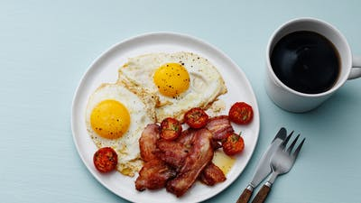

Classic bacon and eggs

One of the all-time best keto breakfasts ever! Step up your bacon and eggs game with this mouth-watering version. Gauge your hunger meter and enjoy as many eggs as you need to feel satisfied. We’re drooling just thinking about this dish of keto deliciousness!
INGREDIENTS
- 8 eggs
- 9 oz. bacon, in slices
- cherry tomatoes (optional)
- fresh thyme (optional)
DIRECTIONS
- Fry the bacon in a pan on medium high heat until crispy. Put aside on a plate. Leave the rendered fat in the pan.
- Use the same pan to fry the eggs. Place it over medium heat and crack your eggs into the bacon grease. You can also crack them into a measuring cup and carefully pour into the pan to avoid splattering of hot grease.
- Cook the eggs any way you like them. For sunny side up — leave the eggs to fry on one side and cover the pan with a lid to make sure they get cooked on top. For eggs cooked over easy — flip the eggs over after a few minutes and cook for another minute. Cut the cherry tomatoes in half and fry them at the same time.
- Salt and pepper to taste.